The Parameters Panel
The Parameters panel allows you to specify parameter values in a report's Print Preview.

Submit Parameter Values
When you open a report's Print Preview, the Parameters panel displays default parameter values and descriptions.
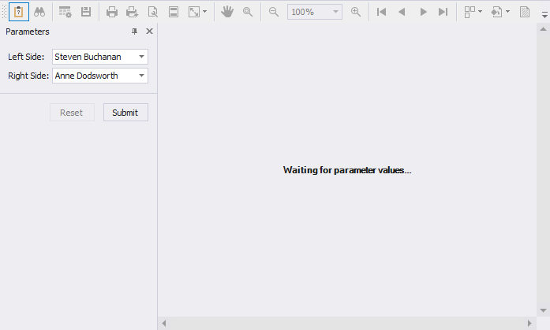
Specify parameter values and click Submit to generate the report's Print Preview. Set the report's RequestParameters property to false to display a report document for the default parameter values when you open the Print Preview.
Reset Parameter Values to Defaults
Click the Reset button to reset parameter values to defaults.
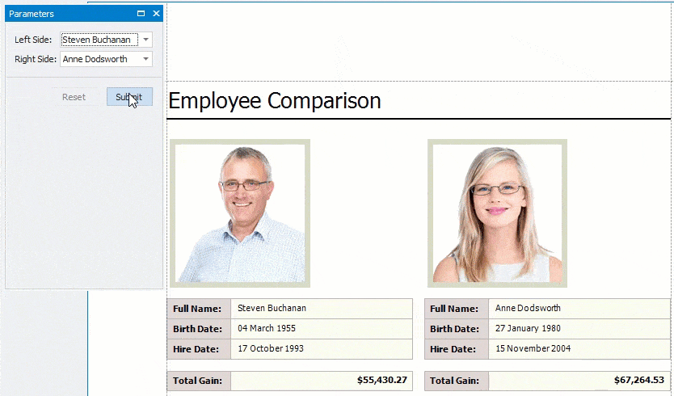
Hide the Parameters Panel
To remove the Parameters panel from a report's Print Preview, disable the Visible option for all report parameters in the Report Parameters Editor.
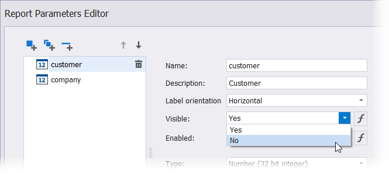
When you hide the Parameters panel, the report's Print Preview is generated with the default parameter values.
Customize the Parameters Panel
You can unite report parameters into expandable groups, place parameters side-by-side, add separators, and more.
| Default panel | Customized panel |
|---|---|
| 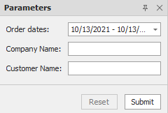 | 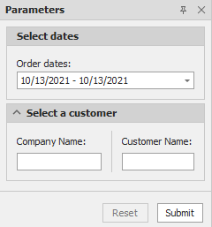 |
Use the Report Parameters Editor
Right-click the Parameters node in the Field List and select Edit Parameters.
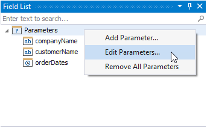
This action invokes the Report Parameters Editor.
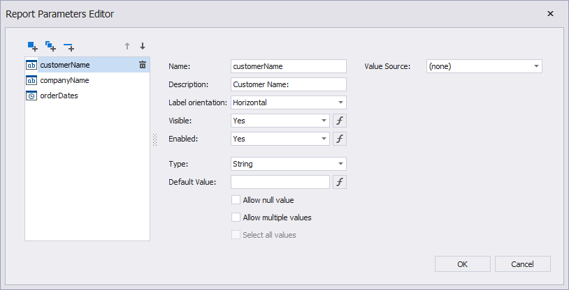
Use the menu on the left to create and customize parameters, groups, and separators.
Customize a Parameter
Specify the Label orientation property to choose the position of a parameter label relative to an editor.
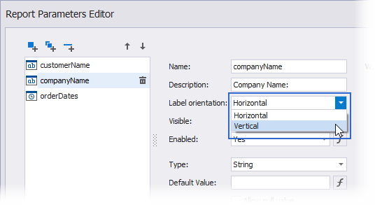
| Label orientation = Horizontal (Default) | Label orientation = Vertical |
|---|---|
| 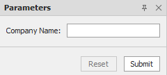 | 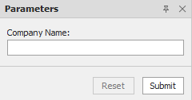 |
Create and Customize a Group
Click the Add group button to create a new group.
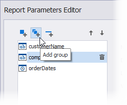
Use the Up and Down buttons to change the order of parameters and groups, and place parameters inside or outside a group.
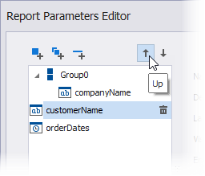
You can also drag-and-drop parameters and groups inside the menu to achieve the same result.
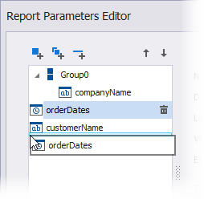
To customize a group, select it and use its editors on the right to set up the group appearance. The following example unites the customerName and companyName parameters into a group called Select a customer.
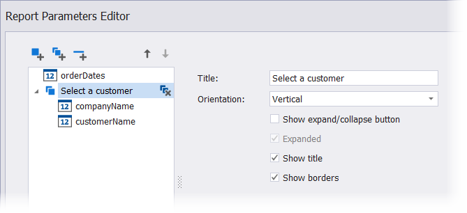
| Default panel | Panel with a group |
|---|---|
| 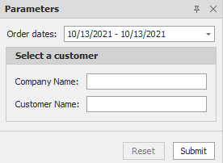 |
Besides a title, you can also specify the following properties to customize the group appearance:
| Orientation = Vertical (Default) | Orientation = Horizontal |
|---|---|
| 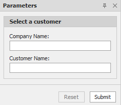 | 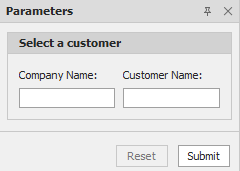 |
| Show expand/collapse button = false (Default) | Show expand/collapse button = true |
|---|---|
| 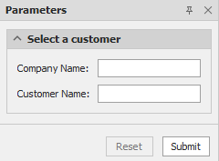 |
| Expanded = true (Default) | Expanded = false |
|---|---|
| 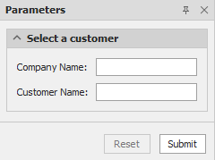 | 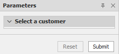 |
| Show title = true (Default) | Show title = false |
|---|---|
| 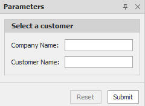 | 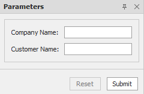 |
| Show borders = true (Default) | Show borders = false |
|---|---|
| 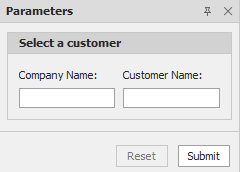 | 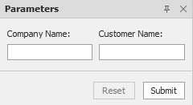 |
Add a Separator
Click the Add separator button to create a separator.
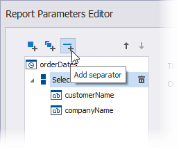
Similar to parameters and groups, you can use the Up and Down buttons or drag-and-drop separators inside the menu to specify the location for these separators relative to other elements.
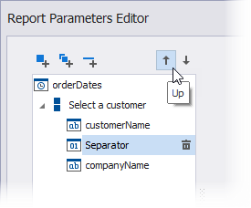
The example below shows the Parameters panel with a separator between the Company Name and Customer Name parameters.
| Default panel | Panel with a separator |
|---|---|
| 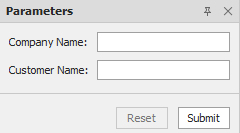 | 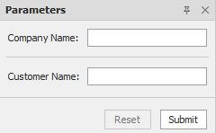 |